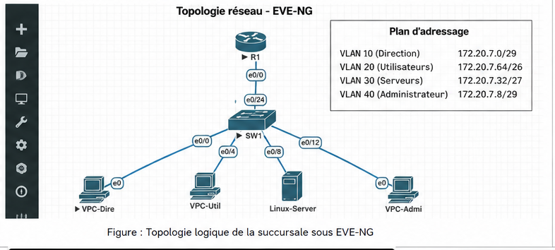
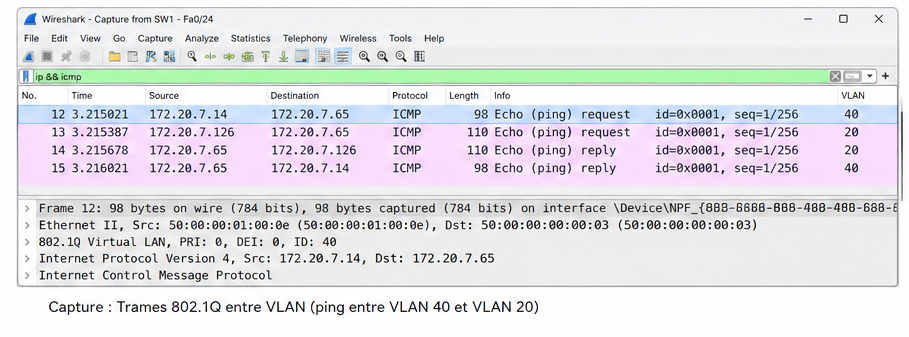

Fiche de suivi du projet
| Nom du projet | SAE 1.02 — S'initier aux réseaux informatiques |
| Compétence visée |
Apprentissages critiques - BUT1 - mobilisés
Composantes essentielles associées |
| Semestre | Semestre 1 · BUT 1 |
| Durée | Déc. 2025 - Janv 2026 18 H |
| Technologies utilisées | Cisco Packet Tracer · Acrylic WiFi Analyzer · Acrylic WiFi HeatMapper · Matériel Cisco · Câblage RJ45 · WiFi 802.11a/g · PC portable et smartphone |
| Compétences développées |
|
| Plan d'action |
|
Synthèse du projet pour le portfolio
Contexte & objectif
Dans le cadre de la SAE 1.02, j'ai simulé l'infrastructure réseau d'une succursale de l'entreprise RTC (Rudy and Theodor Company). L'objectif était de concevoir, configurer et tester un réseau local comprenant plusieurs VLAN, un routeur, un commutateur, un serveur DHCP et des postes clients afin de garantir la communication entre les différents services de l'entreprise.
Technologies utilisées
 Cisco
Cisco
 Wireshark
Wireshark
Compétences mobilisées
- AC11.05 — Identifier les dysfonctionnements du réseau local
- AC11.04 — Maîtriser les rôles des systèmes d'exploitation
Déroulement & méthodologie
Le projet a débuté par l'analyse du cahier des charges afin d'identifier les besoins de l'entreprise et les services à mettre en place. J'ai ensuite conçu l'architecture du réseau en définissant les différents VLAN et le plan d'adressage IP associé. Une fois la conception validée, j'ai créé l'infrastructure dans EVE-NG en ajoutant les équipements nécessaires (routeur, commutateur, serveur et postes clients). J'ai ensuite configuré les VLAN, le routage inter-VLAN et le service DHCP afin de permettre la communication entre les différents réseaux. Enfin, j'ai réalisé plusieurs tests de connectivité et de fonctionnement pour vérifier que l'ensemble des équipements et services répondaient aux exigences du cahier des charges.
Illustrations

Cette illustration présente la topologie logique du réseau réalisée sous EVE-NG. On y retrouve le routeur, le commutateur et les différents équipements répartis dans plusieurs VLAN : Direction, Utilisateurs, Serveurs et Administrateurs. Elle permet de visualiser l’organisation générale du réseau ainsi que le plan d’adressage utilisé.

Cette capture Wireshark montre l’analyse de trames 802.1Q lors d’un test de communication entre deux VLAN. Le ping entre les machines permet de vérifier le bon fonctionnement de l’interconnexion réseau et la présence des étiquettes VLAN dans les paquets capturés.
Retour d'expérience
Ce que j'ai appris
Ce projet m'a permis d'acquérir les bases de l'administration réseau en environnement Cisco. J'ai appris à concevoir une architecture réseau, à segmenter un réseau à l'aide de VLAN, à réaliser un plan d'adressage IP adapté aux besoins d'une entreprise et à configurer le routage inter-VLAN. J'ai également découvert le fonctionnement des services DHCP ainsi que l'utilisation d'outils de simulation et d'analyse réseau comme EVE-NG et Wireshark pour vérifier le bon fonctionnement de l'infrastructure.
Ce que je ferais différemment
Avec le recul, je consacrerais davantage de temps à la phase de conception avant de commencer la configuration des équipements. Je définirais plus précisément l'organisation des VLAN, le plan d'adressage IP et les besoins de chaque service afin d'avoir une vision globale du réseau dès le départ.